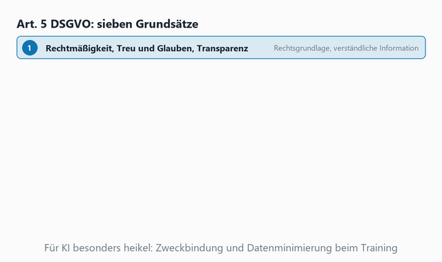
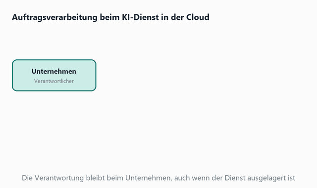
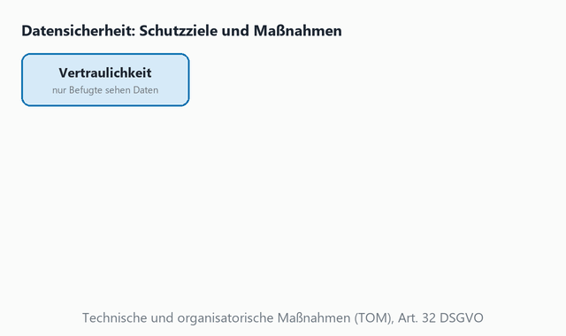
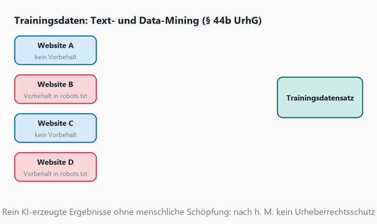
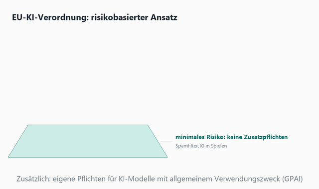
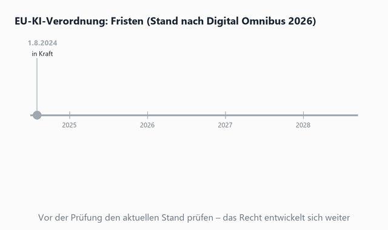

KI lebt von Daten – und damit vom Datenschutz. Trainingsdaten berühren das Urheberrecht, Erfindungen das Patentrecht, und die EU-KI-Verordnung legt fest, welche KI-Anwendungen verboten sind und welche strenge Pflichten haben. In diesem Modul lernen Sie die DSGVO mit Grundsätzen, Rechtsgrundlagen, Betroffenenrechten und Datenschutz-Folgenabschätzung, die Datensicherheit, die Grundlagen des geistigen Eigentums und die EU-KI-Verordnung samt weiterer EU-Regeln.
Rechtsstand: November 2026, einschließlich der Änderungen der EU-KI-Verordnung durch den „Digital Omnibus“ (Verordnung (EU) 2026/1744, in Kraft seit 27. Juli 2026). Das KI-Recht entwickelt sich schnell – prüfen Sie vor der Prüfung den aktuellen Stand.
„Kunde 4711 hat dreimal Babynahrung gekauft“ – kein Name, aber über die Kundennummer lässt sich die Person bestimmen. Das sind personenbezogene Daten.
Personenbezogene Daten (Art. 4 Nr. 1 DSGVO) sind alle Informationen über eine identifizierte oder identifizierbare natürliche Person – Name, Kundennummer, IP-Adresse, Standort, Stimme, Bild. Verarbeitung ist jeder Vorgang: erheben, speichern, auswerten, übermitteln, löschen – auch das Training eines Modells.
| Begriff | Bedeutung |
|---|---|
| Verantwortlicher | entscheidet über Zwecke und Mittel der Verarbeitung (z. B. das Unternehmen) |
| Auftragsverarbeiter | verarbeitet im Auftrag und nach Weisung (z. B. Cloud- oder KI-Anbieter) |
| Pseudonymisierung | Personenbezug nur mit Zusatzwissen herstellbar – bleiben personenbezogene Daten |
| Anonymisierung | Personenbezug nicht mehr herstellbar – DSGVO gilt nicht mehr |
Sobald eine Person bestimmbar ist, gilt die DSGVO – auch für pseudonymisierte Daten und das Training von KI-Modellen.
Pseudonymisiert heißt nicht anonym. Wer die Zuordnungstabelle hat, kann die Person wieder bestimmen – die DSGVO gilt weiter.

| Rechtsgrundlage (Art. 6 Abs. 1) | Beispiel |
|---|---|
| a) Einwilligung | Newsletter, Analyse-Cookies; freiwillig, informiert, widerrufbar |
| b) Vertrag oder vorvertragliche Maßnahmen | Lieferadresse für die Auslieferung |
| c) rechtliche Verpflichtung | Aufbewahrung von Rechnungen nach Steuerrecht |
| d) lebenswichtige Interessen | Notfall |
| e) öffentliche Aufgabe | Behörden |
| f) berechtigtes Interesse (mit Abwägung) | Betrugserkennung bei Zahlungen, IT-Sicherheit |
KI-Training mit vorhandenen Daten ist eine neue Verarbeitung: Passt sie zum ursprünglichen Zweck (Vereinbarkeitsprüfung, Art. 6 Abs. 4)? Gibt es eine Rechtsgrundlage, oft berechtigtes Interesse mit sorgfältiger Abwägung? Lässt sich mit anonymisierten oder synthetischen Daten arbeiten?
Jede Verarbeitung braucht eine Rechtsgrundlage aus Art. 6 und muss die sieben Grundsätze aus Art. 5 einhalten.
Die Einwilligung ist nicht immer die beste Grundlage: Im Arbeitsverhältnis ist sie wegen der Abhängigkeit oft nicht freiwillig, und sie kann jederzeit widerrufen werden.
Besonders geschützt sind Daten über Gesundheit, genetische und biometrische Daten zur Identifizierung, ethnische Herkunft, politische Meinungen, religiöse Überzeugungen, Gewerkschaftszugehörigkeit, Sexualleben und sexuelle Orientierung. Ihre Verarbeitung ist grundsätzlich verboten, außer eine Ausnahme greift (z. B. ausdrückliche Einwilligung, Arbeitsrecht, Gesundheitsvorsorge).
Betroffene haben das Recht, keiner ausschließlich automatisierten Entscheidung mit rechtlicher oder ähnlich erheblicher Wirkung unterworfen zu werden (z. B. vollautomatische Kreditablehnung). Ausnahmen: Vertrag, Gesetz, ausdrückliche Einwilligung – dann mit Schutzmaßnahmen: Recht auf Eingreifen einer Person, Darlegung des eigenen Standpunkts, Anfechtung.
Gesundheits- und biometrische Daten sind tabu, außer eine Ausnahme greift. Wichtige Entscheidungen über Menschen nicht allein der KI überlassen.
Ein Mensch, der KI-Vorschläge nur „abnickt“, macht die Entscheidung nicht zu einer menschlichen. Der EuGH hat 2023 (SCHUFA) zudem entschieden, dass schon ein maßgeblicher Score eine automatisierte Entscheidung sein kann.
| Recht | Inhalt | KI-Bezug |
|---|---|---|
| Information (Art. 13, 14) | Zwecke, Rechtsgrundlage, Empfänger, Dauer, Rechte | auch über automatisierte Entscheidungen und deren Logik |
| Auskunft (Art. 15) | Welche Daten werden verarbeitet? Kopie | auch Eingaben in einen KI-Dienst |
| Berichtigung (Art. 16) | falsche Daten korrigieren | falsche Aussagen eines Sprachmodells über eine Person |
| Löschung (Art. 17) | „Recht auf Vergessenwerden“ | schwierig, wenn Daten in ein Modell eingeflossen sind |
| Einschränkung, Datenübertragbarkeit, Widerspruch (Art. 18, 20, 21) | Nutzung begrenzen, Daten mitnehmen, widersprechen | Widerspruch gegen Profiling |
Antwortfrist: grundsätzlich ein Monat, bei komplexen Fällen um zwei Monate verlängerbar (Art. 12 Abs. 3). Prozesse und Zuständigkeiten dafür müssen vorab festgelegt sein.
Betroffene haben Rechte auf Information, Auskunft, Berichtigung, Löschung, Einschränkung, Übertragbarkeit und Widerspruch – Antwort innerhalb eines Monats.

Externe KI-Dienste nur mit Auftragsverarbeitungsvertrag, geklärtem Drittlandtransfer und ohne Training mit eigenen Daten nutzen.
Pflicht bei voraussichtlich hohem Risiko für Betroffene – etwa bei umfangreicher Verarbeitung besonderer Kategorien, systematischer Bewertung von Personen (Profiling, Scoring), systematischer Überwachung, oft beim Einsatz neuer Technologien wie KI. Inhalt: Beschreibung, Notwendigkeit und Verhältnismäßigkeit, Risikobewertung, Abhilfemaßnahmen.
Datenschutz von Anfang an einbauen: Pseudonymisierung, Datenminimierung, kurze Speicherfristen, datenschutzfreundliche Voreinstellungen (z. B. Training mit Kundendaten standardmäßig aus).
Hohes Risiko → DSFA vor dem Start; Datenschutz gehört in die Architektur, nicht ans Ende.
| Rechtsform | Wer ist Verantwortlicher, wer trägt die Folgen? |
|---|---|
| Einzelunternehmen, GbR | Inhaber bzw. Gesellschaft; Inhaber und Gesellschafter haften persönlich, auch mit dem Privatvermögen |
| GmbH, AG | die Gesellschaft; Bußgelder treffen das Unternehmen, ohne dass eine bestimmte Leitungsperson ermittelt werden muss (EuGH 2023); im Konzern kann der Konzernumsatz maßgeblich sein |
| Geschäftsleitung | kann intern bei Pflichtverletzungen haften; muss Datenschutzorganisation einrichten |
Verantwortlich ist das Unternehmen; bei Einzelunternehmen und GbR wird daraus ein persönliches Risiko.

| KI-spezifische Bedrohung | Maßnahme |
|---|---|
| Prompt Injection (versteckte Anweisungen in Eingaben oder Dokumenten) | Eingaben prüfen, Rechte des KI-Agenten begrenzen, kritische Aktionen bestätigen lassen |
| Data Poisoning (manipulierte Trainingsdaten) | Herkunft prüfen, Datenversionierung, Anomalieerkennung |
| Abfluss vertraulicher Daten über Ausgaben | Zugriffsrechte in RAG beachten, Ausgabefilter, keine Geheimnisse im Prompt |
| Modelldiebstahl, Missbrauch der API | Authentifizierung, Ratenbegrenzung, Monitoring |
Rahmenwerke: ISO/IEC 27001 (zertifizierbares Informationssicherheits-Managementsystem), BSI IT-Grundschutz, für KI ergänzend ISO/IEC 42001 (KI-Managementsystem) und die OWASP-Top-10 für LLM-Anwendungen.
TOM schützen Vertraulichkeit, Integrität und Verfügbarkeit – bei KI zusätzlich gegen Prompt Injection, Data Poisoning und Datenabfluss.
Geschützt sind persönliche geistige Schöpfungen (§ 2 UrhG): Texte, Bilder, Musik, Fotos, Datenbankwerke und Computerprogramme (§ 69a UrhG). Der Schutz entsteht automatisch mit der Schöpfung, ohne Anmeldung, und endet 70 Jahre nach dem Tod des Urhebers (zum Jahresende).
Ein Foto aus dem Internet zu nehmen, weil „es ja öffentlich ist“, ist ohne Erlaubnis meist eine Urheberrechtsverletzung.
Das Urheberrecht selbst ist nicht übertragbar; übertragen werden Nutzungsrechte (§ 31): einfach oder ausschließlich, räumlich, zeitlich und inhaltlich beschränkbar. Software von Angestellten: Die vermögensrechtlichen Befugnisse stehen dem Arbeitgeber zu (§ 69b UrhG). Bei Freelancern muss der Vertrag die Rechteübertragung regeln.
Urheberrecht entsteht automatisch, schützt Schöpfungen von Menschen bis 70 Jahre nach dem Tod; genutzt wird über Nutzungsrechte.
Wer einen Freelancer ein Modell oder Code entwickeln lässt, hat ohne vertragliche Regelung womöglich nur ein einfaches Nutzungsrecht für den vereinbarten Zweck.

Training: erlaubt, außer bei Nutzungsvorbehalt. Output: ohne menschliche Schöpfung kein Schutz – und auf Ähnlichkeit zu fremden Werken prüfen.
Eine technische Erfindung muss neu sein (nicht Stand der Technik), auf erfinderischer Tätigkeit beruhen (für Fachleute nicht naheliegend) und gewerblich anwendbar sein. Schutz durch Anmeldung beim DPMA oder EPA, Dauer höchstens 20 Jahre, gegen Jahresgebühren; die Erfindung wird veröffentlicht.
Computerprogramme „als solche“ sind nicht patentierbar (§ 1 Abs. 3, 4 PatG). Computerimplementierte Erfindungen mit technischem Beitrag schon – etwa ein KI-Verfahren, das Risse in Turbinenschaufeln aus Bilddaten erkennt. Erfinder muss ein Mensch sein; eine KI kann nicht als Erfinder benannt werden (BGH 2024, „DABUS“).
Patent: neu, erfinderisch, gewerblich anwendbar, technisch – höchstens 20 Jahre. Software allein nein, KI mit technischem Beitrag ja.
Wer seine Erfindung vor der Anmeldung auf einer Messe oder im Blog zeigt, zerstört die Neuheit. Erst anmelden, dann veröffentlichen.
| Schutzrecht | Schützt | Entstehung und Dauer |
|---|---|---|
| Marke (MarkenG) | Kennzeichen für Waren und Dienstleistungen | Eintragung beim DPMA oder EUIPO; 10 Jahre, beliebig verlängerbar |
| Geschäftsgeheimnis (GeschGehG) | geheimes Wissen mit wirtschaftlichem Wert: Trainingsdaten, Prompts, Modellgewichte | nur bei angemessenen Geheimhaltungsmaßnahmen (Zugriffsschutz, Verschwiegenheitsvereinbarungen); unbegrenzt |
| Design | Erscheinungsform eines Produkts | Eintragung; bis 25 Jahre |
| Open-Source-Lizenz | Typ | Pflicht bei Weitergabe |
|---|---|---|
| MIT, BSD, Apache 2.0 | freizügig (permissiv) | Lizenz- und Urheberhinweis beibehalten; eigener Code darf geschlossen bleiben |
| GPL | Copyleft | abgeleitete Werke bei Weitergabe ebenfalls unter GPL mit Quellcode |
| Modell-Lizenzen („open weights“) | oft eigene Bedingungen | Nutzungsbeschränkungen beachten (z. B. Größe des Nutzers, verbotene Zwecke) |
Open Source heißt nicht bedingungslos: Lizenzbedingungen gelten, Copyleft kann eigenen Code „mitziehen“. „Open Weights“ ist nicht automatisch Open Source.

Rollen (VO (EU) 2024/1689): Anbieter entwickelt ein KI-System oder bringt es unter eigenem Namen in Verkehr; Betreiber setzt es in eigener Verantwortung beruflich ein; dazu Einführer und Händler. Wer ein Hochrisiko-System wesentlich verändert oder unter eigenem Namen vertreibt, wird selbst Anbieter.
| Klasse | Beispiele | Folge |
|---|---|---|
| Verboten (Art. 5) | manipulative Techniken, Ausnutzen von Schwächen, Social Scoring, Emotionserkennung am Arbeitsplatz und in Bildungseinrichtungen, ungezieltes Sammeln von Gesichtsbildern, biometrische Kategorisierung nach sensiblen Merkmalen; neu durch den Omnibus: KI-Erzeugung nicht einvernehmlicher intimer Bilder | Einsatz untersagt |
| Hohes Risiko (Art. 6, Anhang I und III) | Sicherheitsbauteile in Produkten (Anhang I); Anhang III: Biometrie, kritische Infrastruktur, Bildung, Beschäftigung und Personalauswahl, Kreditwürdigkeit, Lebens- und Krankenversicherung, Strafverfolgung, Migration, Justiz | strenge Pflichten für Anbieter und Betreiber |
| Transparenz (Art. 50) | Chatbots, synthetische Inhalte, Deepfakes, Emotionserkennung | kennzeichnen, informieren |
| Minimal | Spamfilter, Empfehlungen in Spielen | keine Zusatzpflichten (freiwillige Verhaltenskodizes) |
Risikomanagement, Daten-Governance, technische Dokumentation, automatische Protokollierung, Gebrauchsanweisung, menschliche Aufsicht ermöglichen, Genauigkeit, Robustheit, Cybersicherheit, Qualitätsmanagement, Konformitätsbewertung, CE-Kennzeichnung, Registrierung, Beobachtung nach dem Inverkehrbringen.
Nutzung nach Gebrauchsanweisung, menschliche Aufsicht durch kompetente Personen, geeignete Eingabedaten, Überwachung und Meldung von Vorfällen, Protokolle mindestens sechs Monate aufbewahren, Beschäftigte und ihre Vertretung vor dem Einsatz am Arbeitsplatz informieren; bestimmte Betreiber (z. B. öffentliche Stellen, Kreditwürdigkeit) zusätzlich Grundrechte-Folgenabschätzung.
KI-Modelle mit allgemeinem Verwendungszweck (GPAI): technische Dokumentation, Informationen für nachgelagerte Anbieter, Urheberrechtsstrategie, Zusammenfassung der Trainingsdaten; bei systemischem Risiko (z. B. sehr hoher Trainingsaufwand) zusätzlich Bewertung, Tests, Vorfallmeldung, Cybersicherheit.
Erst Rolle bestimmen (Anbieter oder Betreiber), dann Risikoklasse – daraus folgen die Pflichten.
„Ein Unternehmen setzt KI zur Vorauswahl von Bewerbungen ein“ → Hochrisiko nach Anhang III (Beschäftigung), Unternehmen ist Betreiber. Dazu DSGVO (Rechtsgrundlage, Art. 22, DSFA) und Mitbestimmung des Betriebsrats (Modul 16).

Verbote seit 2.2.2025, GPAI seit 2.8.2025, Transparenz ab 2.8.2026, Hochrisiko Anhang III ab 2.12.2027, Anhang I ab 2.8.2028. Bis 35 Mio. € oder 7 %.
Die Verschiebung betrifft nur die Hochrisiko-Pflichten. Verbote und KI-Kompetenz gelten bereits – ebenso die DSGVO, die für jede KI mit Personendaten ohnehin greift.
| Regel | Inhalt | Stand |
|---|---|---|
| Data Act | Nutzer vernetzter Produkte erhalten Zugang zu den erzeugten Daten; leichterer Wechsel zwischen Cloud-Anbietern | anwendbar seit 12.9.2025 |
| NIS-2-Richtlinie | Cybersicherheitspflichten für wichtige und besonders wichtige Einrichtungen (u. a. ab 50 Beschäftigten oder 10 Mio. € Umsatz in bestimmten Sektoren): Risikomanagement, Meldung erheblicher Vorfälle (Frühwarnung binnen 24 Stunden), Verantwortung der Geschäftsleitung | in Deutschland seit Dezember 2025 umgesetzt |
| Cyber Resilience Act | Sicherheitsanforderungen an Produkte mit digitalen Elementen, Updates, Schwachstellenmanagement | Meldepflichten ab 11.9.2026, volle Anwendung ab 11.12.2027 |
| Produkthaftungsrichtlinie (EU) 2024/2853 | Software und KI-Systeme gelten als Produkt; Haftung für Fehler auch durch fehlende Updates | Umsetzung bis 9.12.2026 |
| Digital Services Act / Digital Markets Act | Pflichten für Plattformen und große „Gatekeeper“ | anwendbar |
KI-Projekte stehen nie nur unter der KI-Verordnung: DSGVO, Data Act, NIS-2, Cyber Resilience Act und Produkthaftung kommen oft hinzu.
In Situationsaufgaben punkten Sie, wenn Sie mehrere Rechtsgebiete strukturiert prüfen: KI-Verordnung (Rolle, Klasse), DSGVO (Rechtsgrundlage, DSFA, AV-Vertrag), Urheberrecht (Daten, Output), Arbeitsrecht (Betriebsrat), Sicherheit (TOM, NIS-2).
Tragen Sie Ihre Antworten in die Felder ein. Der Bußgeldrechner in Lektion 14 hilft bei Aufgabe 11.
1. Kundennummer mit Kaufhistorie. 2. Durchschnittsumsatz je Filiale. 3. IP-Adresse eines Website-Besuchers. 4. Temperaturwerte einer Maschine.
1. ja (pseudonym, aber bestimmbar) · 2. nein · 3. ja (in der Regel bestimmbar) · 4. nein, solange kein Bezug zu einer Person hergestellt wird. Je 1 Punkt.
1. Lieferadresse zur Auslieferung einer Bestellung. 2. Speicherung von Rechnungen wegen steuerlicher Aufbewahrungspflicht. 3. Versand eines Newsletters. 4. KI-gestützte Betrugserkennung bei Zahlungen.
1. Vertrag (Art. 6 Abs. 1 b) · 2. rechtliche Verpflichtung (c) · 3. Einwilligung (a) · 4. berechtigtes Interesse (f). Je 1 Punkt.
Eine Onlinebank lehnt Kreditanträge vollautomatisch ab, wenn der KI-Score unter 400 liegt. Was müssen Sie nach Art. 22 DSGVO beachten?
Es ist eine ausschließlich automatisierte Entscheidung mit erheblicher Wirkung (1 P.). Zulässig nur, wenn eine Ausnahme greift, etwa für den Vertragsabschluss erforderlich (1 P.). Dann Schutzmaßnahmen: Recht auf Eingreifen einer Person, auf Darlegung des eigenen Standpunkts und auf Anfechtung; Information über die Logik (1 P.). Zusätzlich: Kreditwürdigkeitsprüfung ist Hochrisiko-KI nach Anhang III.
Am Montag um 9 Uhr bemerkt das Unternehmen, dass eine falsch konfigurierte KI-Anwendung Kundendaten öffentlich zugänglich gemacht hat. a) Bis wann muss es spätestens die Aufsichtsbehörde informieren? b) Wann müssen die Kunden benachrichtigt werden?
a) binnen 72 Stunden, also bis Donnerstag 9 Uhr (1 P.) · b) wenn voraussichtlich ein hohes Risiko für sie besteht, unverzüglich (1 P.).
1. 25 Beschäftigte, 22 davon arbeiten ständig mit Kundendaten am Rechner. 2. 30 Beschäftigte, 8 arbeiten ständig mit personenbezogenen Daten, keine Verarbeitung mit DSFA-Pflicht. 3. Start-up mit 10 Beschäftigten, das mit KI umfangreich Gesundheitsdaten auswertet (DSFA-pflichtig).
1. ja (mindestens 20 Personen) · 2. nein · 3. ja (DSFA-pflichtige Verarbeitung, unabhängig von der Zahl). Je 1 Punkt.
Nennen Sie vier Maßnahmen für eine KI-Plattform, die Kundendaten verarbeitet und einen Chatbot mit Zugriff auf interne Dokumente bereitstellt.
Zum Beispiel: Verschlüsselung bei Übertragung und Speicherung; Rollen- und Rechtekonzept, das auch beim Abruf von Dokumenten (RAG) gilt; Zwei-Faktor-Anmeldung; Protokollierung; Backups; Pseudonymisierung; Schutz gegen Prompt Injection (Rechte des Bots begrenzen, Ausgaben filtern); Schulung; Löschkonzept. Je Maßnahme 1 Punkt.
1. Ist das Foto einer Profifotografin geschützt? 2. Ist ein Bild geschützt, das ein Bildgenerator auf einen kurzen Prompt hin ohne weitere Gestaltung erzeugt hat? 3. Wem stehen die Rechte an Software zu, die ein angestellter Entwickler im Job schreibt? 4. Eine Urheberin stirbt im Jahr 2000. In welchem Jahr wird ihr Werk gemeinfrei (ab 1. Januar)?
1. ja · 2. nach herrschender Auffassung nein (keine menschliche Schöpfung) · 3. dem Arbeitgeber (vermögensrechtliche Befugnisse, § 69b UrhG) · 4. 2071 (Schutz endet am 31.12.2070). Je 1 Punkt.
1. Ein neues, nicht naheliegendes KI-Verfahren, das aus Kamerabildern Risse in Turbinenschaufeln erkennt. 2. Ein Programm, das Preise nach einer neuen Geschäftsregel berechnet, ohne technischen Beitrag. 3. Kann eine KI als Erfinderin im Patent benannt werden?
1. ja (computerimplementierte Erfindung mit technischem Beitrag) · 2. nein (Software bzw. Geschäftsmethode „als solche“) · 3. nein, Erfinder muss ein Mensch sein. Je 1 Punkt.
Ihr Unternehmen verkauft eine Software und will Bibliotheken einbinden. Was ist bei Weitergabe die wesentliche Pflicht bei 1. einer MIT-lizenzierten und 2. einer GPL-lizenzierten Bibliothek, die eng mit dem eigenen Code verbunden ist?
1. Lizenz- und Urheberhinweis beibehalten; eigener Code darf geschlossen bleiben · 2. das abgeleitete Werk muss ebenfalls unter der GPL mit Quellcode weitergegeben werden (Copyleft). Je 1 Punkt.
1. KI sortiert Bewerbungen vor. 2. Eine Stadt vergibt Punkte für „gutes Verhalten“ der Bürger und knüpft Vorteile daran. 3. Kundenservice-Chatbot. 4. Spamfilter. 5. KI erkennt im Callcenter die Emotionen der Beschäftigten.
1. hohes Risiko · 2. verboten (Social Scoring) · 3. Transparenzpflicht · 4. minimales Risiko · 5. verboten (Emotionserkennung am Arbeitsplatz). Je 1 Punkt.
a) Seit wann gelten die Verbote? b) Ab wann gelten die Hochrisiko-Pflichten nach Anhang III nach dem Digital Omnibus? c) Seit wann gelten die Pflichten für KI-Modelle mit allgemeinem Verwendungszweck? d) Höchstbußgeld in Mio. € für einen Konzern mit 2 Mrd. € Jahresumsatz bei einer verbotenen Praktik?
a) 2.2.2025 · b) 2.12.2027 · c) 2.8.2025 · d) 7 % von 2.000 Mio. € = 140 Mio. € (höher als 35 Mio. €). Je 1 Punkt.
Die Muster Pflege GmbH (300 Beschäftigte) will ein KI-System eines Anbieters aus den USA einsetzen, das Bewerbungen bewertet und eine Rangliste erstellt; die Personalabteilung lädt dann die oberen 20 % ein. Prüfen Sie den Fall nach a) EU-KI-Verordnung, b) DSGVO, c) Arbeitsrecht und d) Vertrag mit dem Anbieter.
a) KI-Verordnung (2 P.): Hochrisiko nach Anhang III (Beschäftigung), Pflichten ab 2.12.2027; die GmbH ist Betreiberin: Nutzung nach Anleitung, menschliche Aufsicht durch geschulte Personen, geeignete Eingabedaten, Überwachung, Protokolle ≥ 6 Monate, Information der Beschäftigtenvertretung; KI-Kompetenz schon jetzt. b) DSGVO (3 P.): Rechtsgrundlage (Durchführung des Bewerbungsverfahrens), Art. 22 – da faktisch automatisch aussortiert wird, echte menschliche Prüfung einbauen; DSFA wegen Bewertung von Personen; Information der Bewerber; Drittlandtransfer (DPF oder Standardvertragsklauseln); Bias prüfen (auch AGG-Diskriminierungsverbot). c) Arbeitsrecht (1 P.): Betriebsrat – Auswahlrichtlinien (§ 95 BetrVG) und technische Einrichtung zur Überwachung (§ 87 Abs. 1 Nr. 6), Information nach § 90. d) Vertrag (2 P.): AV-Vertrag nach Art. 28, kein Training mit Bewerberdaten, Speicherort, Dokumentation und Gebrauchsanweisung nach KI-Verordnung, Nachweise zu Tests auf Diskriminierung, Haftung, Exit und Löschung.
20 Fragen im Stil der schriftlichen Prüfung, jeweils eine richtige Antwort. Ab 14 richtigen Antworten (70 %) sind Sie gut vorbereitet.
bestimmbar = DSGVO; pseudonym bleibt personenbezogen.
Art. 5: sieben Grundsätze; Art. 6: sechs Rechtsgrundlagen.
Art. 9 grundsätzlich verboten; Art. 22 keine rein automatische Entscheidung.
Auskunft, Berichtigung, Löschung, Widerspruch; Antwort in einem Monat.
AV-Vertrag, Drittland (DPF, SCC), kein Training mit eigenen Daten.
DSFA, Privacy by Design, Meldung binnen 72 h, DSB ab 20 Personen.
TOM für Vertraulichkeit, Integrität, Verfügbarkeit; Prompt Injection.
Urheberrecht 70 J. p. m.; TDM mit Opt-out; Patent 20 J.; Geschäftsgeheimnis.
Rollen, vier Risikoklassen, GPAI; bis 35 Mio. € oder 7 %.
2.2.2025, 2.8.2025, 2.8.2026, 2.12.2027, 2.8.2028.
| Begriff | Erklärung |
|---|---|
| Anbieter / Betreiber | entwickelt bzw. setzt ein KI-System in eigener Verantwortung ein |
| Auftragsverarbeiter | verarbeitet personenbezogene Daten im Auftrag und nach Weisung |
| DSFA | Datenschutz-Folgenabschätzung bei hohem Risiko (Art. 35) |
| Digital Omnibus | Änderung der KI-Verordnung 2026, verschiebt Hochrisiko-Fristen |
| GPAI | KI-Modell mit allgemeinem Verwendungszweck |
| Prompt Injection | Angriff mit versteckten Anweisungen in Eingaben |
| Pseudonymisierung | Personenbezug nur mit Zusatzwissen herstellbar |
| Text- und Data-Mining | automatisierte Analyse von Werken, erlaubt mit Opt-out (§ 44b UrhG) |
| TOM | technische und organisatorische Maßnahmen |
| Copyleft | Lizenzpflicht, abgeleitete Werke unter gleicher Lizenz weiterzugeben |
Weiter mit Modul 13: Abwägungsmethoden – Kosten-Nutzen-, Nutzwert- und Sensitivitätsanalyse für KI-Entscheidungen.